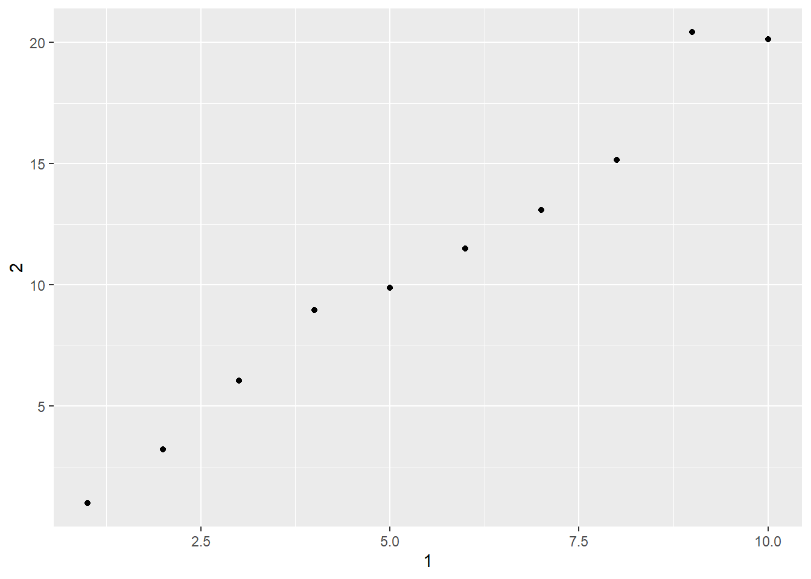

2.2 티블
티블(tibble 또는 tbl_df)은, 엑셀의 워크시트와 같은 표(table)를 구현한 또 다른 데이터 구조로, 데이터 프레임을 현대적으로 재구상하여 효과가 입증된 부분은 유지하고 그렇지 않은 부분은 제외시킨 데이터 구조이다.
티블은 게으르고 은밀한 데이터 구조이다. 티블은 변수 이름이나 데이터 유형을 변경하지 않고, 부분 일치를 행하지 않는 등 데이터에 대한 변경을 되도록 않는다. 이로 인해 데이터에 내포된 문제를 더 일찍 파악하게 ㅎ여 일반적으로 더 깔끔하고 표현력이 풍부한 코드를 생성할 수 있게 돕습니다. 티블은 복잡한 개체가 포함된 대규모 데이터 세트에서 쉽게 사용할 수 있는 향상된 출력 메소드도 제공하고 있다.
티블은 tidyverse 생태계를 구성하는 한 멤버로 tidyverse를 설치하게 되면 즉시 활용할 수 있다. 티블을 생성하고, 데이터 유형의 변환(강제 변환), 외부 데이터를 가져오는 방법 등과 관련한 함수들을 데이터 프레임의 함수들과 비교하면 다음과 같다.
| 작업 유형 | 데이터프레임 명령어 | 티블 명령어 |
|---|---|---|
| 생성 | data.frame() | data_frame(), tibble(), tribble() |
| 강제변환(coersion) | as.data.frame() | as_tibble() |
| 데이터 불러오기 | read.*() | read_*() |
2.2.1 참고자료
2.2.2 티블의 생성
tibble() 함수로 티블을 생성할 수 있다 .티블은 데이터 프레임의 좋은 점들을 압축하고 있다. 또한 이 함수와 함께 tribble() 함수를 사용하면 좀 더 직관적으로 티블을 생성할 수도 있다.
2.2.2.1 벡터 결합에 의한 티블 생성
먼저 tibble() 함수의 사용방법에 대하여 살펴보기로 한다. 이를 위해, 숫자형 벡터 a_num과 문자형 벡터 b_char 가 있다. 이 두개의 벡터를 결합하여 tb1 이라는 티블을 생성해 보자.
먼저 두 개의 벡터를 다음과 같이 생성한다.
a_num <- 1:5; a_num## [1] 1 2 3 4 5b_char <- letters[1:5]; b_char## [1] "a" "b" "c" "d" "e"tibble() 함수를 이용하여 두 벡터를 결합한 tb1은 다음과 같이 생성할 수 있다.
tb1 <- tibble(a = a_num, b = b_char); tb1## # A tibble: 5 x 2
## a b
## <int> <chr>
## 1 1 a
## 2 2 b
## 3 3 c
## 4 4 d
## 5 5 estr(tb1)## tibble [5 x 2] (S3: tbl_df/tbl/data.frame)
## $ a: int [1:5] 1 2 3 4 5
## $ b: chr [1:5] "a" "b" "c" "d" ...tibble [5 x 2] (S3: tbl_df/tbl/data.frame): tibble 클래스는 S3 형태의 tbl_df, tbl, 그리고 data.frame 등의
티블의 생성
tb2 <- tribble( ~a, ~b,
#---|----
1, "a",
2, "b")
tb2## # A tibble: 2 x 2
## a b
## <dbl> <chr>
## 1 1 a
## 2 2 bstr(tb2)## tibble [2 x 2] (S3: tbl_df/tbl/data.frame)
## $ a: num [1:2] 1 2
## $ b: chr [1:2] "a" "b"~a, ~b: 컬럼의 지정#---|----: 컬럼 이름과 데이터 구분을 위해 삽입.#로 R은 주석 처리함.1, "a",: 이하는 데이터 값
2.2.2.2 데이터 프레임을 티블로 변환하기 : as_tibble() 함수
데이터프레임을 티블로 강제 변환해야 할 경우가 있다. as_tibble() 를 사용하면 된다.
str(iris) # 데이터 프레임## 'data.frame': 150 obs. of 5 variables:
## $ Sepal.Length: num 5.1 4.9 4.7 4.6 5 5.4 4.6 5 4.4 4.9 ...
## $ Sepal.Width : num 3.5 3 3.2 3.1 3.6 3.9 3.4 3.4 2.9 3.1 ...
## $ Petal.Length: num 1.4 1.4 1.3 1.5 1.4 1.7 1.4 1.5 1.4 1.5 ...
## $ Petal.Width : num 0.2 0.2 0.2 0.2 0.2 0.4 0.3 0.2 0.2 0.1 ...
## $ Species : Factor w/ 3 levels "setosa","versicolor",..: 1 1 1 1 1 1 1 1 1 1 ...str(as_tibble(iris)) # 티블## tibble [150 x 5] (S3: tbl_df/tbl/data.frame)
## $ Sepal.Length: num [1:150] 5.1 4.9 4.7 4.6 5 5.4 4.6 5 4.4 4.9 ...
## $ Sepal.Width : num [1:150] 3.5 3 3.2 3.1 3.6 3.9 3.4 3.4 2.9 3.1 ...
## $ Petal.Length: num [1:150] 1.4 1.4 1.3 1.5 1.4 1.7 1.4 1.5 1.4 1.5 ...
## $ Petal.Width : num [1:150] 0.2 0.2 0.2 0.2 0.2 0.4 0.3 0.2 0.2 0.1 ...
## $ Species : Factor w/ 3 levels "setosa","versicolor",..: 1 1 1 1 1 1 1 1 1 1 ...2.2.2.3 개별 벡터를 티블로 만들기
tibble()을 사용하여 개별 벡터로부터 새로운 티블을 만들 수 있다.tibble()은 길이가 1인 입력을 자동으로 재사용하며, 여기에서 보이는 것처럼, 방금 만든 변수를 참조할 수도 있다.
tb1 <- tibble(
x = 1:5,
y = 1,
z = x ^ 2 + y
)
tb1## # A tibble: 5 x 3
## x y z
## <int> <dbl> <dbl>
## 1 1 1 2
## 2 2 1 5
## 3 3 1 10
## 4 4 1 17
## 5 5 1 26- z 컬럼은 계산된 컬럼(computed column)이다.
2.2.2.4 tribble()로 티블 만들기
- 티블을 만드는 또 다른 방법은
tribble()(전치된(transposed) 티블의 줄임말)을 사용하는 것이다. tribble()은 코드로 데이터 입력을 하기 위해 고안되었다.- 열 헤더는 공식으로 정의되고 (즉,
~로 시작), 데이터은 쉼표로 구분된다. - 이렇게 하면 적은 양의 데이터를 읽기 쉬운 형태로 배치할 수 있다.
2.2.2.4.1 티블 생성
tribble(
~x, ~y, ~z,
#--|--|----
"a", 2, 3.6,
"b", 1, 8.5
)## # A tibble: 2 x 3
## x y z
## <chr> <dbl> <dbl>
## 1 a 2 3.6
## 2 b 1 8.5- 컬럼명을 지정할 때,
~를 이용한다. - 각 컬럼의 데이터 타입(
<chr>,<dbl>,<dbl>)은 자동으로 인식하여 결정된다.
2.2.2.5 tibble()의 특징
data.frame()에 비해tibble()은 동작의 규모가 훨씬 작다는 것에 주의해야 한다.- 즉, 입력의 유형을 절대로 변경하지 않고 (예를 들어, 문자열을 팩터형으로 변환하지 않는다!), 변수의 이름을 바꾸거나, 행 이름을 생성하지 않는다.
tibble()은 입력 데이터의 데이터 타입을 변경하지 않는다.- (즉,
stringsAsFactors = FALSE이 필요하지 않다!). - 문자형 변수를 이용하는데 보다 편리하다.
- (즉,
letters## [1] "a" "b" "c" "d" "e" "f" "g" "h" "i" "j" "k" "l" "m" "n" "o" "p" "q" "r" "s"
## [20] "t" "u" "v" "w" "x" "y" "z"tibble(x = letters)## # A tibble: 26 x 1
## x
## <chr>
## 1 a
## 2 b
## 3 c
## 4 d
## 5 e
## 6 f
## 7 g
## 8 h
## 9 i
## 10 j
## # ... with 16 more rows- 이러한 점이 list 형 컬럼의 사용을 용이하게 해 준다:
tbl <- tibble(x = 1:3, y = list(1:5, 1:10, 1:20))
tbl$y## [[1]]
## [1] 1 2 3 4 5
##
## [[2]]
## [1] 1 2 3 4 5 6 7 8 9 10
##
## [[3]]
## [1] 1 2 3 4 5 6 7 8 9 10 11 12 13 14 15 16 17 18 19 20tbl$y[1]## [[1]]
## [1] 1 2 3 4 5tbl$y[[1]]## [1] 1 2 3 4 5list 형의 컬럼은 do() 함수에 의해 보통 생성되지만, 수작업으로 생성하는 것이 유용할 수 있다.
do() 함수의 이용 예 : [참고 바람]
by_cyl <- group_by(mtcars, cyl)
do(by_cyl, head(., 2))## # A tibble: 6 x 11
## # Groups: cyl [3]
## mpg cyl disp hp drat wt qsec vs am gear carb
## <dbl> <dbl> <dbl> <dbl> <dbl> <dbl> <dbl> <dbl> <dbl> <dbl> <dbl>
## 1 22.8 4 108 93 3.85 2.32 18.6 1 1 4 1
## 2 24.4 4 147. 62 3.69 3.19 20 1 0 4 2
## 3 21 6 160 110 3.9 2.62 16.5 0 1 4 4
## 4 21 6 160 110 3.9 2.88 17.0 0 1 4 4
## 5 18.7 8 360 175 3.15 3.44 17.0 0 0 3 2
## 6 14.3 8 360 245 3.21 3.57 15.8 0 0 3 4models <- by_cyl %>% do(mod = lm(mpg ~ disp, data = .))
models## # A tibble: 3 x 2
## # Rowwise:
## cyl mod
## <dbl> <list>
## 1 4 <lm>
## 2 6 <lm>
## 3 8 <lm>summarise(models, rsq = summary(mod)$r.squared)## `summarise()` ungrouping output (override with `.groups` argument)## # A tibble: 3 x 1
## rsq
## <dbl>
## 1 0.648
## 2 0.0106
## 3 0.270models %>% do(data.frame(coef = coef(.$mod)))## # A tibble: 6 x 1
## # Rowwise:
## coef
## <dbl>
## 1 40.9
## 2 -0.135
## 3 19.1
## 4 0.00361
## 5 22.0
## 6 -0.0196models %>% do(data.frame(
var = names(coef(.$mod)),
coef(summary(.$mod)))
)## # A tibble: 6 x 5
## # Rowwise:
## var Estimate Std..Error t.value Pr...t..
## <chr> <dbl> <dbl> <dbl> <dbl>
## 1 (Intercept) 40.9 3.59 11.4 0.00000120
## 2 disp -0.135 0.0332 -4.07 0.00278
## 3 (Intercept) 19.1 2.91 6.55 0.00124
## 4 disp 0.00361 0.0156 0.232 0.826
## 5 (Intercept) 22.0 3.35 6.59 0.0000259
## 6 disp -0.0196 0.00932 -2.11 0.0568models <- by_cyl %>% do(
mod_linear = lm(mpg ~ disp, data = .),
mod_quad = lm(mpg ~ poly(disp, 2), data = .)
)
models## # A tibble: 3 x 3
## # Rowwise:
## cyl mod_linear mod_quad
## <dbl> <list> <list>
## 1 4 <lm> <lm>
## 2 6 <lm> <lm>
## 3 8 <lm> <lm>compare <- models %>% do(aov = anova(.$mod_linear, .$mod_quad))
compare$aov## [[1]]
## Analysis of Variance Table
##
## Model 1: mpg ~ disp
## Model 2: mpg ~ poly(disp, 2)
## Res.Df RSS Df Sum of Sq F Pr(>F)
## 1 9 71.509
## 2 8 47.784 1 23.726 3.9722 0.08139 .
## ---
## Signif. codes: 0 '***' 0.001 '**' 0.01 '*' 0.05 '.' 0.1 ' ' 1
##
## [[2]]
## Analysis of Variance Table
##
## Model 1: mpg ~ disp
## Model 2: mpg ~ poly(disp, 2)
## Res.Df RSS Df Sum of Sq F Pr(>F)
## 1 5 12.5424
## 2 4 7.4506 1 5.0918 2.7336 0.1736
##
## [[3]]
## Analysis of Variance Table
##
## Model 1: mpg ~ disp
## Model 2: mpg ~ poly(disp, 2)
## Res.Df RSS Df Sum of Sq F Pr(>F)
## 1 12 62.183
## 2 11 47.551 1 14.632 3.3848 0.09292 .
## ---
## Signif. codes: 0 '***' 0.001 '**' 0.01 '*' 0.05 '.' 0.1 ' ' 1tibble()은 변수의 이름을 조정하지 않는다.- 티블은 R 변수명으로는 유효하지 않은 이름(비구문론적 이름)도 열 이름으로 가질 수 있다.
- 예를 들어, 문자로 시작하지 않거나 공백과 같은 비정상적인 문자가 포함될 수 있다.
- 이 변수들을 참조하려면 역따옴표(backticks, ``)로 감싸야 한다.
names(data.frame("crazy name" = 1))## [1] "crazy.name"names(tibble('crazy name' = 1))## [1] "crazy name"tb <- tibble(
`:)` = "smile",
` ` = "space",
`2000` = "number"
)
tb## # A tibble: 1 x 3
## `:)` ` ` `2000`
## <chr> <chr> <chr>
## 1 smile space number- `names(data.frame("crazy name" = 1))`와 같이 데이터 프레임의 경우는 컬럼명에 공란을 허용하지 않으며, 자동으로 공란을 점(`.`)으로 변경하여 `crazy.name`으로 컬럼명을 조정한다.
- `names(tibble('crazy name' = 1))`와 같이 `tibble()` 함수는 공란이 있는 컬럼명을 허용한다.
- `tb`의 경우, 컬럼명에 기호, 공란 그리고 숫자 등이 허용됨을 알 수 있다. 다만, 컬럼명을 지정할 때 역따옴표(` )를 사용한다.
- `ggplot2`, `dplyr` 및 `tidyr` 과 같은 다른 패키지에서 이러한 변수로 작업할 때도 역따옴표(` )가 필요하다.tibble()은 인수들을 천천히 그리고 순차적으로 평가한다:
tibble(x = 1:5, y = x ^ 2)## # A tibble: 5 x 2
## x y
## <int> <dbl>
## 1 1 1
## 2 2 4
## 3 3 9
## 4 4 16
## 5 5 25tibble()은row.names()를 사용하지 않는다.- 타이디 데이터의 중요한 점은 일관되게 변수를 저장한다는 것이다.
- 따라서 이것은 변수를 특별한 속성으로 저장하지 않는다.
tibble()길이가 1인 벡터만을 리싸이클(recycling, 자동 반복) 한다.- 이 보다 더 큰 길이의 벡터를 리싸이클링하는 것은 종종 버그의 원인이 된다.
2.2.3 강제변환(Coercion)
tibble()함수를 보완하기 위해, 티블은 오브젝트를 티블로 변환하기 위해as.data.frame()함수보다 더 단순한as_tibble()함수를 제공하고 있다.
- 그리고 실제로
as.data.frame()함수와 같이 작동하지만do.call(cbind, lapply(x, data.frame))과 비슷하다.- 즉, 각 요소들을 하나의 데이터 프레임으로 변환한 다음
cbind()함수로 그것들을 함께 결합해 준다.
- 즉, 각 요소들을 하나의 데이터 프레임으로 변환한 다음
as_tibble()함수가 성능 향상을 위해 작성되었다:
l <- replicate(26, sample(100), simplify = FALSE)
names(l) <- letters
timing <- bench::mark(
as_tibble(l),
as.data.frame(l),
check = FALSE
)
timing## # A tibble: 2 x 6
## expression min median `itr/sec` mem_alloc `gc/sec`
## <bch:expr> <bch:tm> <bch:tm> <dbl> <bch:byt> <dbl>
## 1 as_tibble(l) 153.1us 259.1us 3432. 1.8KB 11.0
## 2 as.data.frame(l) 1.32ms 1.84ms 509. 4.91KB 8.42as.data.frame()의 처리 속도는 상호작용으로 사용될 때 병목현상의 일어나지 않지만,- 하나의 tidy 데이터 프레임에 많은 정제되지 않은 데이터를 입력할 때는 문제가 될 수 있다.
2.2.4 티블과 데이터 프레임의 비교
티블과 데이터 프레임 사이에는 3가지의 중요한 차이점이 있다 : 화면 출력, 서브세팅, 자동 반복 원칙 등
2.2.4.1 화면 출력(Printing)
- 티블을 출력하면, 처음의 10개 행과 한 화면에 맞게 모든 열을 보여준다.
- 또한 각 열의 데이터 타입을 요약해서 보여주고, 폰트 스타일과 강조를 위한 색상을 사용한다.
tibble(x = -5:1000)## # A tibble: 1,006 x 1
## x
## <int>
## 1 -5
## 2 -4
## 3 -3
## 4 -2
## 5 -1
## 6 0
## 7 1
## 8 2
## 9 3
## 10 4
## # ... with 996 more rows티블은 큰 데이터 프레임을 화면출력할 때 실수로 콘솔을 넘어가지 않도록 설계되었다.
그러나 때로는 기본 디스플레이보다 더 많은 출력이 필요하곤 한다.
도움이 되는 몇 가지 옵션이 있다.
options 를 설정하여 기본 출력 동작을 제어할 수도 있다.
options(tibble.print_max = n, tibble.print_min = m):n행 이상이 있는 경우,m행만 출력한다.- 모든 행을 표시하려면
options(dplyr.print_min = Inf)을 사용하라.
- 모든 행을 표시하려면
# 최소 10줄
options(tibble.print_max = 20, tibble.print_min = 10)
tibble(a = 1:26, b = letters) ## # A tibble: 26 x 2
## a b
## <int> <chr>
## 1 1 a
## 2 2 b
## 3 3 c
## 4 4 d
## 5 5 e
## 6 6 f
## 7 7 g
## 8 8 h
## 9 9 i
## 10 10 j
## # ... with 16 more rows# 최소 3줄
options(tibble.print_max = 5, tibble.print_min = 3)
tibble(a = 1:26, b = letters) ## # A tibble: 26 x 2
## a b
## <int> <chr>
## 1 1 a
## 2 2 b
## 3 3 c
## # ... with 23 more rows- 첫 번째 티블의 경우, 행의 갯수가 26개로 20개(`
tibble.print_max = 20)를 초과하므로, 10개의 행(tibble.print_min = 10)만 출력하고 있다. - 두 번째 티블의 경우, 행의 갯수가 26개로 5개(`
tibble.print_max = 5)를 초과하므로, 3개의 행(tibble.print_min = 3)만 출력하고 있다.
options(tibble.width = Inf)을 사용하면 화면 너비와 상관없이 모든 열을 출력한다.
nycflights13::flights %>%
print(n = 10, width = Inf)## # A tibble: 336,776 x 19
## year month day dep_time sched_dep_time dep_delay arr_time sched_arr_time
## <int> <int> <int> <int> <int> <dbl> <int> <int>
## 1 2013 1 1 517 515 2 830 819
## 2 2013 1 1 533 529 4 850 830
## 3 2013 1 1 542 540 2 923 850
## 4 2013 1 1 544 545 -1 1004 1022
## 5 2013 1 1 554 600 -6 812 837
## 6 2013 1 1 554 558 -4 740 728
## 7 2013 1 1 555 600 -5 913 854
## 8 2013 1 1 557 600 -3 709 723
## 9 2013 1 1 557 600 -3 838 846
## 10 2013 1 1 558 600 -2 753 745
## arr_delay carrier flight tailnum origin dest air_time distance hour minute
## <dbl> <chr> <int> <chr> <chr> <chr> <dbl> <dbl> <dbl> <dbl>
## 1 11 UA 1545 N14228 EWR IAH 227 1400 5 15
## 2 20 UA 1714 N24211 LGA IAH 227 1416 5 29
## 3 33 AA 1141 N619AA JFK MIA 160 1089 5 40
## 4 -18 B6 725 N804JB JFK BQN 183 1576 5 45
## 5 -25 DL 461 N668DN LGA ATL 116 762 6 0
## 6 12 UA 1696 N39463 EWR ORD 150 719 5 58
## 7 19 B6 507 N516JB EWR FLL 158 1065 6 0
## 8 -14 EV 5708 N829AS LGA IAD 53 229 6 0
## 9 -8 B6 79 N593JB JFK MCO 140 944 6 0
## 10 8 AA 301 N3ALAA LGA ORD 138 733 6 0
## time_hour
## <dttm>
## 1 2013-01-01 05:00:00
## 2 2013-01-01 05:00:00
## 3 2013-01-01 05:00:00
## 4 2013-01-01 05:00:00
## 5 2013-01-01 06:00:00
## 6 2013-01-01 05:00:00
## 7 2013-01-01 06:00:00
## 8 2013-01-01 06:00:00
## 9 2013-01-01 06:00:00
## 10 2013-01-01 06:00:00
## # ... with 336,766 more rows2.2.4.2 서브세팅(Subsetting)
티블은
data.frame보다 좀 더 엄격하다.절대로 부분 매칭을 사용하지 않으며, 접근하려는 열이 존재하지 않는 경우에는 경고를 생성한다.
변수 하나(단일 열)를 추출하려면 새로운 도구인
$및[[]]이 필요하다.[[]]는 이름이나 위치로 추출할 수 있다.$는 이름으로만 추출할 수 있지만 타이핑을 조금 덜 해도 된다.
2.2.4.2.1 데이터 세트
set.seed(1234)
df <- tibble(
x = runif(5),
y = rnorm(5)
)
df## # A tibble: 5 x 2
## x y
## <dbl> <dbl>
## 1 0.114 0.359
## 2 0.622 -0.730
## 3 0.609 0.0357
## 4 0.623 0.113
## 5 0.861 1.432.2.4.2.2 이름으로 추출
df$x## [1] 0.1137034 0.6222994 0.6092747 0.6233794 0.8609154df[["x"]]## [1] 0.1137034 0.6222994 0.6092747 0.6233794 0.86091542.2.4.2.3 위치로 추출
df[[1]]## [1] 0.1137034 0.6222994 0.6092747 0.6233794 0.86091542.2.4.2.4 파이프 연산자(%>%)의 사용
파이프 연산자(%>%)를 사용하는 경우, 특별한 플레이스홀더(placeholder)인 .를 사용해야 한다.
df %>% .$x## [1] 0.1137034 0.6222994 0.6092747 0.6233794 0.8609154df %>% .[["x"]]## [1] 0.1137034 0.6222994 0.6092747 0.6233794 0.86091542.2.4.2.5 []의 사용
[]는 항상 또 다른 티블을 반환한다. 이러한 특징을 데이터 프레임과 비교하면, 데이터 프레임은 어떨 때는 데이터 프레임을 또 어떨 때는 벡터를 반환한다:
# data.frame() 함수
df1 <- data.frame(x = 1:3, y = 3:1)
class(df1[, 1:2]) # 데이터 프레임## [1] "data.frame"class(df1[, 1]) # 벡터## [1] "integer"# tibble() 함수
df2 <- tibble(x = 1:3, y = 3:1)
class(df2[, 1:2]) # tibble## [1] "tbl_df" "tbl" "data.frame"class(df2[, 1]) # tibble## [1] "tbl_df" "tbl" "data.frame"2.2.4.2.6 $의 사용
티블은 $를 사용하는데 있어서 엄격하다. 절대로 부분 매칭을 사용하지 않으며, 접근하려는 열이 존재하지 않는 경우에는 경고를 생성하거나 NULL을 반환한다.
# data.frame() 함수
df <- data.frame(abc = 1)
df$a # 'abc' 열의 첫 글자로 부분 매칭을 함## [1] 1# tibble() 함수
df2 <- tibble(abc = 1)
df2$a # NULL과 경고메시지 출력## Warning: Unknown or uninitialised column: `a`.## NULLdf변수의 경우,data.frame()함수를 사용하고 있으며, 이 경우df$a는abc컬럼명을 부분 매칭하고 있다.df2변수의 경우,tibble()함수를 사용하고 있으며, 이 경우df$a는 부분 매칭을 허용하지 않는다. 따라서NULL과 경고 메시지를 출력한다.
2.2.4.2.7 drop = 옵션의 사용
1.4.1 버전 이후, 티블은 더 이상 drop = 인수를 무시하지 않는다:
# data.frame() 함수
d1 <- data.frame(a = 1:3)
d1[, "a"]## [1] 1 2 3d1[, "a", drop = TRUE] # 'drop = TRUE'가 디폴트 ## [1] 1 2 3d1[, "a", drop = FALSE]## a
## 1 1
## 2 2
## 3 3# tibble() 함수
d2 <- tibble(a = 1:3)
d2[, "a"]## # A tibble: 3 x 1
## a
## <int>
## 1 1
## 2 2
## 3 3d2[, "a", drop = TRUE]## [1] 1 2 3d2[, "a", drop = FALSE] # 'drop = FALSE'가 디폴트## # A tibble: 3 x 1
## a
## <int>
## 1 1
## 2 2
## 3 3- `d1` 변수의 경우, `data.frame()` 함수를 사용하여 생성되었으며, 이 경우 요소 검색 시에 `drop = TRUE` 옵션이 작동하지 않는다.
- `d2` 변수의 경우, `tibble()` 함수를 사용하여 생성되었으며, 이 경우 요소 검색 시에 `drop = TRUE` 옵션이 작동한다.2.2.4.3 자동 반복 (Recycling)
- 티블을 생성할 때 오직 길이가 1인 값만이 자동 반복된다.
- 길이가 1이 아닌 첫 번째 열이 티블의 행 갯수를 결정하며, 충돌이 되면 에러가 발생한다.
- 이러한 점은 또한 때때로 프로그램에 있어서 중요한
0개의 행을 가진 티블로 확장된다:
tibble(a = 1, b = 1:3)## # A tibble: 3 x 2
## a b
## <dbl> <int>
## 1 1 1
## 2 1 2
## 3 1 3tibble(a = 1:3, b = 1)## # A tibble: 3 x 2
## a b
## <int> <dbl>
## 1 1 1
## 2 2 1
## 3 3 1# tibble(a = 1:3, c = 1:2) # Error : Tibble columns must have compatible sizes.
tibble(a = 1, b = integer()) # A tibble: 0 x 2 (0행, 2열)## # A tibble: 0 x 2
## # ... with 2 variables: a <dbl>, b <int>tibble(a = integer(), b = 1) # A tibble: 0 x 2 (0행, 2열)## # A tibble: 0 x 2
## # ... with 2 variables: a <int>, b <dbl>2.2.5 이전 코드와 상호작용
- 일부 오래된 함수는 티블에서 동작하지 않는다.
- 이러한 함수를 사용하려면
as.data.frame()를 사용하여 티블을data.frame으로 되돌려야 한다.
tb <- tibble(
`:)` = "smile",
` ` = "space",
`2000` = "number"
)
tb1 <- as.data.frame(tb)
tb1## :) 2000
## 1 smile space numberstr(tb1)## 'data.frame': 1 obs. of 3 variables:
## $ :) : chr "smile"
## $ : chr "space"
## $ 2000: chr "number"class(tb1)## [1] "data.frame"- 오래된 함수 중 일부가 티블에서 작동하지 않는 주된 이유는 `[` 함수 때문이다.
- 여기에서는 `[` 를 많이 사용하지 않는데, `dplyr::filter()` 와 `dplyr::select()` 가 더 명확한 코드로 해결할 수 있기 때문이다.
- ([벡터 서브셋하기](https://sulgik.github.io/r4ds/tibble.html#vector-subsetting)에서 좀 더 자세히 알 수 있다). baseR의 데이터프레임을 사용하면[는 어떨 때는 데이터프레임을 반환하고, 또 어떨 때는 벡터를 반환한다.- 티블에서
[는 항상 다른 티블을 반환한다.
2.2.6 외부 데이터 가져오기 (importing)
.csv 파일 변수명이 흥미롭게 된 파일데이터를 기존 read.csv() 함수와 read_csv() 함수로 각각 불러오는 경우를 비교하여 보자. read_csv()가 원본 데이터를 깔끔하게 가져올 뿐만 아니라 속도도 빠르다.
2.2.6.1 read_lines() 함수 → 벡터**
file_url <- "https://gist.githubusercontent.com/theoroe3/8bc989b644adc24117bc66f50c292fc8/raw/f677a2ad811a9854c9d174178b0585a87569af60/tibbles_data.csv"
read_lines(file_url)## [1] "<-,8,%,name" "1,2,0.25,t" "2,4,0.25,h" "3,6,0.25,e" "4,8,0.25,o"2.2.6.2 read.csv() 함수 → 데이터프레임**
read.csv() 함수는 외부 데이터를 가져올 때, 데이터 프레임 형태로 가져온다
read.csv(file_url)## X.. X8 X. name
## 1 1 2 0.25 t
## 2 2 4 0.25 h
## 3 3 6 0.25 e
## 4 4 8 0.25 o2.2.6.3 read_csv() 함수 → 티블**
read_csv() 함수는 외부 데이터를 가져올 때, 티블 형태로 가져온다.
read_csv(file_url)##
## -- Column specification --------------------------------------------------------
## cols(
## `<-` = col_double(),
## `8` = col_double(),
## `%` = col_double(),
## name = col_character()
## )## # A tibble: 4 x 4
## `<-` `8` `%` name
## <dbl> <dbl> <dbl> <chr>
## 1 1 2 0.25 t
## 2 2 4 0.25 h
## 3 3 6 0.25 e
## 4 4 8 0.25 o2.2.7 연습문제
어떤 객체가 티블 인지 알 수 있는 방법은 무엇인가? (힌트: 일반 데이터프레임인
mtcars를 화면 출력해보라.)head(mtcars)## mpg cyl disp hp drat wt qsec vs am gear carb ## Mazda RX4 21.0 6 160 110 3.90 2.620 16.46 0 1 4 4 ## Mazda RX4 Wag 21.0 6 160 110 3.90 2.875 17.02 0 1 4 4 ## Datsun 710 22.8 4 108 93 3.85 2.320 18.61 1 1 4 1 ## Hornet 4 Drive 21.4 6 258 110 3.08 3.215 19.44 1 0 3 1 ## Hornet Sportabout 18.7 8 360 175 3.15 3.440 17.02 0 0 3 2 ## Valiant 18.1 6 225 105 2.76 3.460 20.22 1 0 3 1# mtcars as.tibble(mtcars)## Warning: `as.tibble()` is deprecated as of tibble 2.0.0. ## Please use `as_tibble()` instead. ## The signature and semantics have changed, see `?as_tibble`. ## This warning is displayed once every 8 hours. ## Call `lifecycle::last_warnings()` to see where this warning was generated.## # A tibble: 32 x 11 ## mpg cyl disp hp drat wt qsec vs am gear carb ## <dbl> <dbl> <dbl> <dbl> <dbl> <dbl> <dbl> <dbl> <dbl> <dbl> <dbl> ## 1 21 6 160 110 3.9 2.62 16.5 0 1 4 4 ## 2 21 6 160 110 3.9 2.88 17.0 0 1 4 4 ## 3 22.8 4 108 93 3.85 2.32 18.6 1 1 4 1 ## # ... with 29 more rowsclass(mtcars)## [1] "data.frame"data.frame과 이에 해당하는 티블에서 다음 연산들을 비교하고 차이를 밝혀보라. 차이점은 무엇인가? 데이터프레임의 기본 동작이 혼란스러운 점은 무엇인가?df <- data.frame(abc = 1, xyz = "a") df$x## [1] "a"df[, "xyz"]## [1] "a"df[, c("abc", "xyz")]## abc xyz ## 1 1 a두 번쨰의
df$x의 경우 컬럼명에x가 없지만 컬럼명과 부분 매칭을 해서xyz컬럼의 값들을 출력하고 있다.tibble()함수를 이용하면 부분 매칭이 허용되지 않는다.
tbl <- tibble(abc = 1, xyz = "a") tbl$x # 컬럼명의 부분 매칭을 허용하지 않음.## Warning: Unknown or uninitialised column: `x`.## NULLtbl[, "xyz"]## # A tibble: 1 x 1 ## xyz ## <chr> ## 1 atbl[, c("abc", "xyz")]## # A tibble: 1 x 2 ## abc xyz ## <dbl> <chr> ## 1 1 a객체에 변수 이름을 저장하고 있는 경우 (예:
var <- "mpg"), 티블에서 이 참조 변수를 어떻게 추출할 수 있는가?mtcars## mpg cyl disp hp drat wt qsec vs am gear carb ## Mazda RX4 21.0 6 160.0 110 3.90 2.620 16.46 0 1 4 4 ## Mazda RX4 Wag 21.0 6 160.0 110 3.90 2.875 17.02 0 1 4 4 ## Datsun 710 22.8 4 108.0 93 3.85 2.320 18.61 1 1 4 1 ## Hornet 4 Drive 21.4 6 258.0 110 3.08 3.215 19.44 1 0 3 1 ## Hornet Sportabout 18.7 8 360.0 175 3.15 3.440 17.02 0 0 3 2 ## Valiant 18.1 6 225.0 105 2.76 3.460 20.22 1 0 3 1 ## Duster 360 14.3 8 360.0 245 3.21 3.570 15.84 0 0 3 4 ## Merc 240D 24.4 4 146.7 62 3.69 3.190 20.00 1 0 4 2 ## Merc 230 22.8 4 140.8 95 3.92 3.150 22.90 1 0 4 2 ## Merc 280 19.2 6 167.6 123 3.92 3.440 18.30 1 0 4 4 ## Merc 280C 17.8 6 167.6 123 3.92 3.440 18.90 1 0 4 4 ## Merc 450SE 16.4 8 275.8 180 3.07 4.070 17.40 0 0 3 3 ## Merc 450SL 17.3 8 275.8 180 3.07 3.730 17.60 0 0 3 3 ## Merc 450SLC 15.2 8 275.8 180 3.07 3.780 18.00 0 0 3 3 ## Cadillac Fleetwood 10.4 8 472.0 205 2.93 5.250 17.98 0 0 3 4 ## Lincoln Continental 10.4 8 460.0 215 3.00 5.424 17.82 0 0 3 4 ## Chrysler Imperial 14.7 8 440.0 230 3.23 5.345 17.42 0 0 3 4 ## Fiat 128 32.4 4 78.7 66 4.08 2.200 19.47 1 1 4 1 ## Honda Civic 30.4 4 75.7 52 4.93 1.615 18.52 1 1 4 2 ## Toyota Corolla 33.9 4 71.1 65 4.22 1.835 19.90 1 1 4 1 ## Toyota Corona 21.5 4 120.1 97 3.70 2.465 20.01 1 0 3 1 ## Dodge Challenger 15.5 8 318.0 150 2.76 3.520 16.87 0 0 3 2 ## AMC Javelin 15.2 8 304.0 150 3.15 3.435 17.30 0 0 3 2 ## Camaro Z28 13.3 8 350.0 245 3.73 3.840 15.41 0 0 3 4 ## Pontiac Firebird 19.2 8 400.0 175 3.08 3.845 17.05 0 0 3 2 ## Fiat X1-9 27.3 4 79.0 66 4.08 1.935 18.90 1 1 4 1 ## Porsche 914-2 26.0 4 120.3 91 4.43 2.140 16.70 0 1 5 2 ## Lotus Europa 30.4 4 95.1 113 3.77 1.513 16.90 1 1 5 2 ## Ford Pantera L 15.8 8 351.0 264 4.22 3.170 14.50 0 1 5 4 ## Ferrari Dino 19.7 6 145.0 175 3.62 2.770 15.50 0 1 5 6 ## Maserati Bora 15.0 8 301.0 335 3.54 3.570 14.60 0 1 5 8 ## Volvo 142E 21.4 4 121.0 109 4.11 2.780 18.60 1 1 4 2t_cars <- as_tibble(mtcars) var <- "mpg" t_cars$var # NULL과 경고 메시지 출력## Warning: Unknown or uninitialised column: `var`.## NULLt_cars[[var]]## [1] 21.0 21.0 22.8 21.4 18.7 18.1 14.3 24.4 22.8 19.2 17.8 16.4 17.3 15.2 10.4 ## [16] 10.4 14.7 32.4 30.4 33.9 21.5 15.5 15.2 13.3 19.2 27.3 26.0 30.4 15.8 19.7 ## [31] 15.0 21.4- 이렇게 티블의 컬럼을 변수명으로 하여 검색하려 할 때에,
$를 사용하면NULL과 경고 메시지가 출력된다.
- 이렇게 티블의 컬럼을 변수명으로 하여 검색하려 할 때에,
다음의 데이터프레임에서 비구문론적 이름을 참조하는 방법을 연습해보라.
- 1 이라는 이름의 변수를 추출하기.
- 1 vs 2 의 산점도를 플롯팅 하기.
- 열 2 를 열 1 로 나누어, 3 이라는 새로운 열을 생성하기.
- 열의 이름을 one, two, three 로 변경하기.
test <- tibble( `1` = 1:10, `2` = `1` * 2 + rnorm(length(`1`)) ) ## 1. test[["1"]]## [1] 1 2 3 4 5 6 7 8 9 10## 2. ggplot(test, aes(x = `1`, y = `2`)) + geom_point()
## 3. mutate(test, `3` = `2` / `1`)## # A tibble: 10 x 3 ## `1` `2` `3` ## <int> <dbl> <dbl> ## 1 1 1.00 1.00 ## 2 2 3.22 1.61 ## 3 3 6.06 2.02 ## # ... with 7 more rows# 또는 test[["3"]] <- test$`2` / test$`1` ## 4. test <- rename(test, one = `1`, two = `2`, three = `3`) glimpse(test)## Rows: 10 ## Columns: 3 ## $ one <int> 1, 2, 3, 4, 5, 6, 7, 8, 9, 10 ## $ two <dbl> 1.001614, 3.223746, 6.064459, 8.959494, 9.889715, 11.488990, ... ## $ three <dbl> 1.001614, 1.611873, 2.021486, 2.239874, 1.977943, 1.914832, 1...tibble::enframe()은 어떤 동작을 하는가? 언제 사용하겠는가?tibble::enframe()은 이름이 붙여진 벡터를name컬럼과value컬럼으로 구성되는 데이터 프레임으로 변환한다.
enframe(c(a = "A", b = "B", c = "C"))## # A tibble: 3 x 2 ## name value ## <chr> <chr> ## 1 a A ## 2 b B ## 3 c C티블의 바닥글(footer)에 화면출력되는 열 이름의 개수를 제어하는 옵션은 무엇인가?
n_extra인수가 열 이름의 갯수를 제어한다. (? print.tbl참고)
mtcars2 <- as_tibble(cbind(mtcars, mtcars), .name_repair = "unique")## New names: ## * mpg -> mpg...1 ## * cyl -> cyl...2 ## * disp -> disp...3 ## * hp -> hp...4 ## * drat -> drat...5 ## * ...print(mtcars2, n = 4, n_extra = 4)## # A tibble: 32 x 22 ## mpg...1 cyl...2 disp...3 hp...4 drat...5 wt...6 qsec...7 vs...8 am...9 ## <dbl> <dbl> <dbl> <dbl> <dbl> <dbl> <dbl> <dbl> <dbl> ## 1 21 6 160 110 3.9 2.62 16.5 0 1 ## 2 21 6 160 110 3.9 2.88 17.0 0 1 ## 3 22.8 4 108 93 3.85 2.32 18.6 1 1 ## 4 21.4 6 258 110 3.08 3.22 19.4 1 0 ## # ... with 28 more rows, and 13 more variables: gear...10 <dbl>, ## # carb...11 <dbl>, mpg...12 <dbl>, cyl...13 <dbl>, ...print(mtcars2, n = 4, n_extra = 10)## # A tibble: 32 x 22 ## mpg...1 cyl...2 disp...3 hp...4 drat...5 wt...6 qsec...7 vs...8 am...9 ## <dbl> <dbl> <dbl> <dbl> <dbl> <dbl> <dbl> <dbl> <dbl> ## 1 21 6 160 110 3.9 2.62 16.5 0 1 ## 2 21 6 160 110 3.9 2.88 17.0 0 1 ## 3 22.8 4 108 93 3.85 2.32 18.6 1 1 ## 4 21.4 6 258 110 3.08 3.22 19.4 1 0 ## # ... with 28 more rows, and 13 more variables: gear...10 <dbl>, ## # carb...11 <dbl>, mpg...12 <dbl>, cyl...13 <dbl>, disp...14 <dbl>, ## # hp...15 <dbl>, drat...16 <dbl>, wt...17 <dbl>, qsec...18 <dbl>, ## # vs...19 <dbl>, ...- 예를 들기 위해,
mtcars데이터 세트를cbind()함수를 이용하여 컬럼의 폭을 두 배로 늘렸다.n = 4인수를 이용하여 출력할 행의 갯수를 제한하였다.n_extra =인수를 이용하여 추가적인 컬럼에 대한 정보의 출력 갯수를 제어하였다.
References
https://statkclee.github.io/data-science/data-handling-tibble.html
dtplyr: dplyr의 편리함과 data.table의 속도를 그대로! : data.table, dplyr, dtplyr 의 속도비교